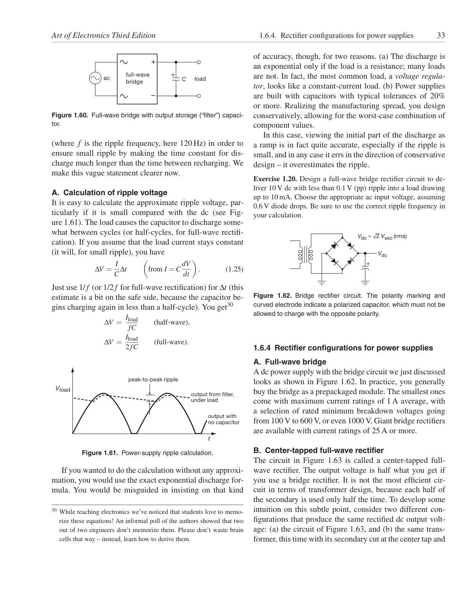

<!doctype html>
<html lang="en"><head><meta charset="utf-8"><meta name="viewport" content="width=device-width,initial-scale=1">
<title>Page 33 of 70</title><meta name="source-page" content="33"><link rel="stylesheet" href="../styles.css">
<link rel="prev" href="page-032.html"><link rel="next" href="page-034.html"></head><body>
<header><div><a class="back" href="../index.html">All pages</a> <span class="meta">Source page 33 / 70</span></div>
<nav class="nav" aria-label="Page navigation"><a href="page-032.html">Previous</a><a href="page-034.html">Next</a></nav></header>
<main><h1 class="meta">Page 33</h1><figure class="sheet"></figure>
<details class="transcript" open><summary>Fetchable text — page 33</summary><div class="text"><p>Art of Electronics Third Edition
1.6.4. Rectifier configurations for power supplies
33</p><p>+</p><p>+</p><p>full-wave
bridge
load
ac
C</p><p>–</p><p>Figure 1.60. Full-wave bridge with output storage (“filter”) capacitor.</p><p>of accuracy, though, for two reasons. (a) The discharge is
an exponential only if the load is a resistance; many loads
are not. In fact, the most common load, a voltage regulator, looks like a constant-current load. (b) Power supplies
are built with capacitors with typical tolerances of 20%
or more. Realizing the manufacturing spread, you design
conservatively, allowing for the worst-case combination of
component values.</p><p>In this case, viewing the initial part of the discharge as
a ramp is in fact quite accurate, especially if the ripple is
small, and in any case it errs in the direction of conservative
design – it overestimates the ripple.</p><p>(where f is the ripple frequency, here 120 Hz) in order to
ensure small ripple by making the time constant for discharge much longer than the time between recharging. We
make this vague statement clearer now.</p><p>Exercise 1.20. Design a full-wave bridge rectifier circuit to deliver 10 V dc with less than 0.1 V (pp) ripple into a load drawing
up to 10 mA. Choose the appropriate ac input voltage, assuming
0.6 V diode drops. Be sure to use the correct ripple frequency in
your calculation.</p><p>Vdc ≈ √2 Vsec (rms)</p><p>A. Calculation of ripple voltage
It is easy to calculate the approximate ripple voltage, particularly if it is small compared with the dc (see Figure 1.61). The load causes the capacitor to discharge somewhat between cycles (or half-cycles, for full-wave rectification). If you assume that the load current stays constant
(it will, for small ripple), you have</p><p></p><p></p><p>Vdc
+</p><p>ΔV = I</p><p>from I = C dV</p><p>.
(1.25)</p><p>C Δt</p><p>dt</p><p>Just use 1/ f (or 1/2f for full-wave rectification) for Δt (this
estimate is a bit on the safe side, because the capacitor begins charging again in less than a half-cycle). You get30</p><p>Figure 1.62. Bridge rectifier circuit. The polarity marking and
curved electrode indicate a polarized capacitor, which must not be
allowed to charge with the opposite polarity.</p><p>ΔV = Iload</p><p>fC
(half-wave),</p><p>ΔV = Iload</p><p>2fC
(full-wave).</p><p>1.6.4 Rectifier configurations for power supplies</p><p>peak-to-peak ripple</p><p>Vload</p><p>output from filter,
under load</p><p>output with
no capacitor</p><p>A. Full-wave bridge
A dc power supply with the bridge circuit we just discussed
looks as shown in Figure 1.62. In practice, you generally
buy the bridge as a prepackaged module. The smallest ones
come with maximum current ratings of 1 A average, with
a selection of rated minimum breakdown voltages going
from 100 V to 600 V, or even 1000 V. Giant bridge rectifiers
are available with current ratings of 25 A or more.</p><p>t</p><p>Figure 1.61. Power-supply ripple calculation.</p><p>If you wanted to do the calculation without any approximation, you would use the exact exponential discharge formula. You would be misguided in insisting on that kind</p><p>30 While teaching electronics we’ve noticed that students love to memorize these equations! An informal poll of the authors showed that two
out of two engineers don’t memorize them. Please don’t waste brain
cells that way – instead, learn how to derive them.</p><p>B. Center-tapped full-wave rectifier
The circuit in Figure 1.63 is called a center-tapped fullwave rectifier. The output voltage is half what you get if
you use a bridge rectifier. It is not the most efficient circuit in terms of transformer design, because each half of
the secondary is used only half the time. To develop some
intuition on this subtle point, consider two different configurations that produce the same rectified dc output voltage: (a) the circuit of Figure 1.63, and (b) the same transformer, this time with its secondary cut at the center tap and</p></div></details></main>
<footer>Visual layout, figures, tables, equations, footnotes, and original printed page number are preserved in the lossless page image. <a href="../text/page-033.txt">Plain text</a> · <a href="../data/page-033.json">JSON</a></footer>
</body></html>